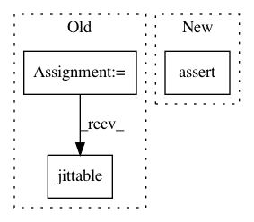

72e8ef33d6a6239b71dbd1b24edccf1e5d03d9a1,test/nn/conv/test_gcn_conv.py,,test_gcn_conv,#,5
Before Change
assert out.size() == (num_nodes, out_channels)
assert conv(x, edge_index, edge_weight).size() == (num_nodes, out_channels)
jit_conv = conv.jittable()
jit_conv = torch.jit.script(jit_conv)
assert jit_conv(x, edge_index).tolist() == out.tolist()
conv = GCNConv(in_channels, out_channels, cached=True)
After Change
assert conv.__repr__() == "GCNConv(16, 32)"
out1 = conv(x, edge_index)
assert out1.size() == (4, 32)
assert torch.allclose(conv(x, adj1.t()), out1, atol=1e-6)
out2 = conv(x, edge_index, value)
assert out2.size() == (4, 32)
assert torch.allclose(conv(x, adj2.t()), out2, atol=1e-6)
In pattern: SUPERPATTERN
Frequency: 3
Non-data size: 3
Instances
Project Name: rusty1s/pytorch_geometric
Commit Name: 72e8ef33d6a6239b71dbd1b24edccf1e5d03d9a1
Time: 2020-06-15
Author: matthias.fey@tu-dortmund.de
File Name: test/nn/conv/test_gcn_conv.py
Class Name:
Method Name: test_gcn_conv
Project Name: rusty1s/pytorch_geometric
Commit Name: 5762f2b30f58c1623efd6841d1273d8ab67541ea
Time: 2020-06-08
Author: matthias.fey@tu-dortmund.de
File Name: test/nn/conv/test_gin_conv.py
Class Name:
Method Name: test_gine_conv
Project Name: rusty1s/pytorch_geometric
Commit Name: 5762f2b30f58c1623efd6841d1273d8ab67541ea
Time: 2020-06-08
Author: matthias.fey@tu-dortmund.de
File Name: test/nn/conv/test_gin_conv.py
Class Name:
Method Name: test_gin_conv